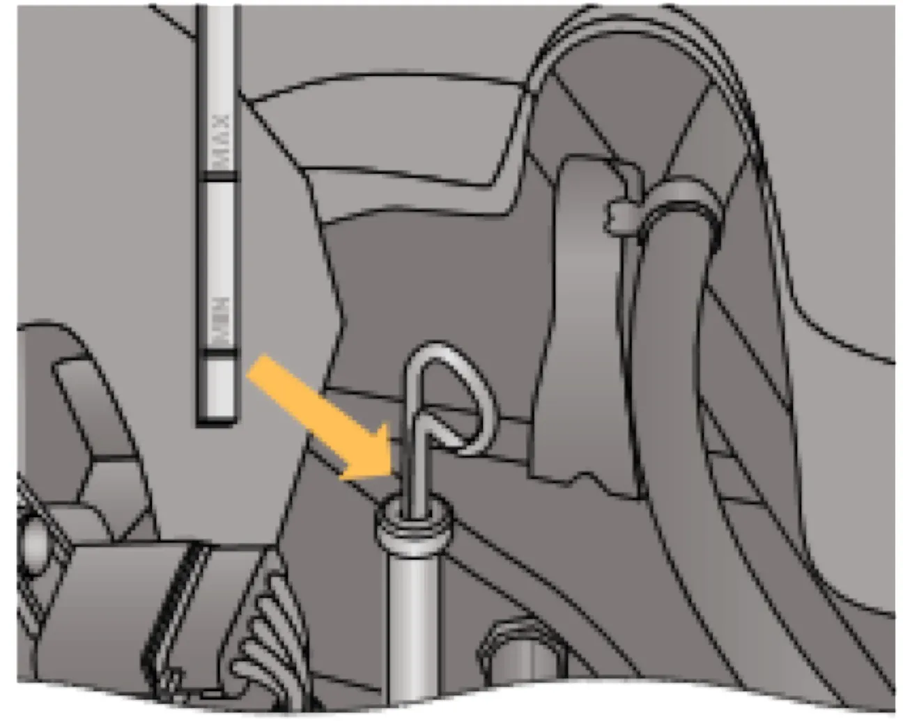

ТЕХНИЧЕСКОЕ ОБСЛУЖИВАНИЕ И ТЕКУЩИЙ РЕМОНТ АВТОМОБИЛЯ
Система смазки двигателя
маслощупуровень масла
При работающем двигателе расход моторного масла — нормальное явление. Величина расхода масла зависит от стиля вождения автомобиля и определяется нагрузкой на двигатель и частотой вращения коленчатого вала. В начальный период эксплуатации расход масла несколько повышен. Поэтому регулярно, особенно перед дальними поездками, проверяйте уровень масла в картере двигателя.

Предупреждение / внимание:
Периодически необходимо проверять состояние защитных резиновых чехлов шарниров приводов передних колёс, шаровых опор, а также защитных колпачков шарниров рулевых тяг. Если чехол или колпачок повреждён или скручен, то в шарнир будут проникать пыль, вода и грязь, что вызовет их усиленный износ и разрушение. Поэтому повреждённый чехол или колпачок должен быть заменён новым, а скрученный — поправлен.
Периодически необходимо проверять состояние защитных резиновых чехлов шарниров приводов передних колёс, шаровых опор, а также защитных колпачков шарниров рулевых тяг. Если чехол или колпачок повреждён или скручен, то в шарнир будут проникать пыль, вода и грязь, что вызовет их усиленный износ и разрушение. Поэтому повреждённый чехол или колпачок должен быть заменён новым, а скрученный — поправлен.
Уровень масла проверяйте на холодном неработающем двигателе и при необходимости доливайте масло. Уровень масла должен находиться между метками «MIN» и «MAX» указателя. Свежее масло доливайте через горловину, закрываемую пробкой.
Предупреждение / внимание:
Уровень масла не должен превышать метки «MAX» указателя. В противном случае масло через систему вентиляции картера будет попадать в камеру сгорания и вместе с отработавшими газами выбрасываться в атмосферу. На автомобилях, оснащённых каталитическим нейтрализатором, продукты сгорания масла могут вывести нейтрализатор из строя.
Уровень масла не должен превышать метки «MAX» указателя. В противном случае масло через систему вентиляции картера будет попадать в камеру сгорания и вместе с отработавшими газами выбрасываться в атмосферу. На автомобилях, оснащённых каталитическим нейтрализатором, продукты сгорания масла могут вывести нейтрализатор из строя.